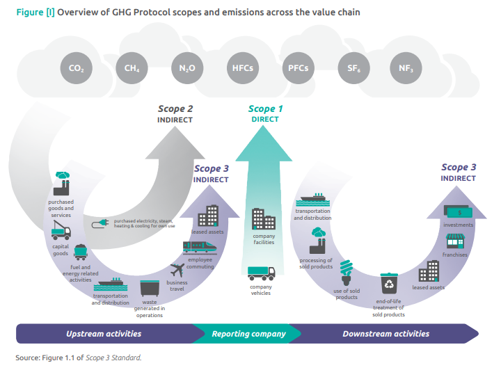
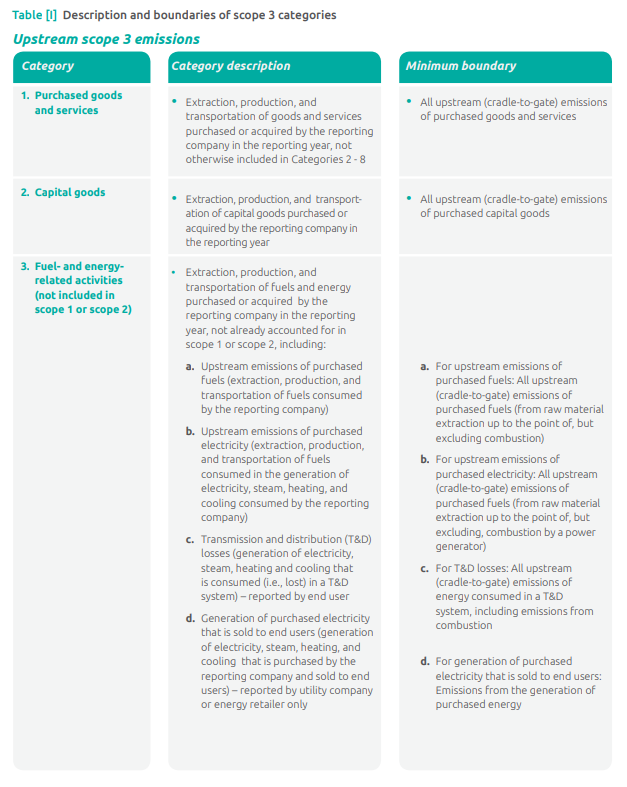
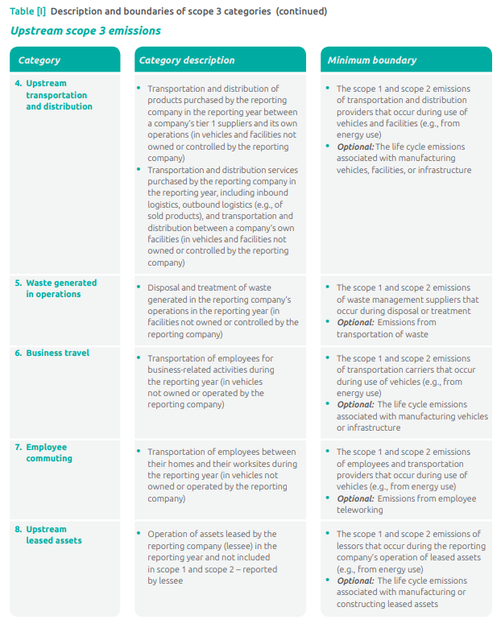
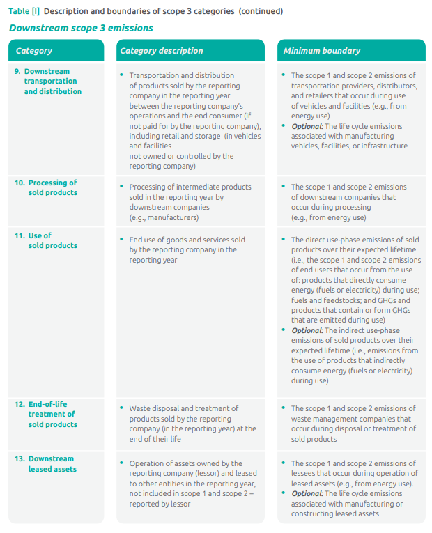
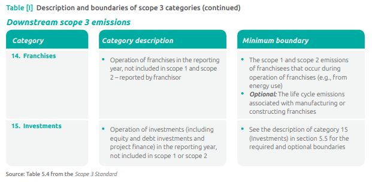

The GHG Protocol Technical Guidance for Calculating Scope 3 Emissions (version 1.0) is available at the following link:
https://ghgprotocol.org/scope-3-technical-calculation-guidance
The text below is a direct extract from this guidance document, providing a high-level summary of the 15 Scope 3 categories.
Figure I shows the 15 distinct reporting categories in scope 3 and also shows how scope 3 relates to scope 1 (direct emissions from owned or controlled sources) and scope 2 (indirect emissions from the generation of purchased electricity, steam, heating and cooling consumed by the reporting company). Scope 3 includes all other indirect emissions that occur in a company’s value chain.
The 15 categories in scope 3 are intended to provide companies with a systematic framework to measure, manage, and reduce emissions across a corporate value chain. The categories are designed to be mutually exclusive to avoid a company double counting emissions among categories. Table I gives descriptions of each of the 15 categories. The Scope 3 Standard requires companies to quantify and report scope 3 emissions from each category.




